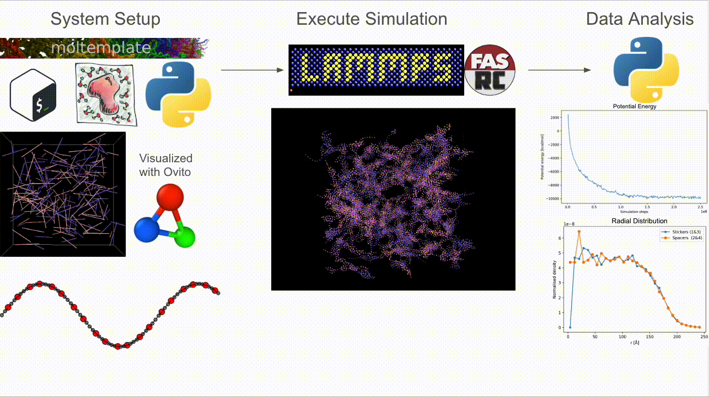

Welcome to CASPULE’s documentation!
This project uses a single Bash wrapper (create_InitCoor.sh) together with six Python scripts to generate Packmol + Moltemplate input files and produce LAMMPS‐ready data files.
Graphical Summary
{kind=link}
Quick Start
Ensure prerequisites are on your PATH - packmol - moltemplate.sh - A LAMMPS binary (e.g., lmp_serial)
Run the pipeline
bash create_InitCoor.sh
Behind the scenes, this executes:
python3 LT_writer.py <n> <seg_pattern>python3 writePackmolInput.py <n> <NA> <NB> <L> populate_tmp.inp IC_tmp.xyzpython3 writeSysLT.py <n> <NA> <NB> <L> b70_N200_L<L>.ltpackmol < populate_tmp.inpmoltemplate.sh -xyz IC_tmp.xyz b70_N200_L<L>.lt -nocheckpython3 updateColVar.py IC_tmp.xyz N400_Rg_L700.colvars <L> <n> <NA> <NB> <seg_pattern>python3 updateInput.py Template_input.in <L>python3 fix_datafiles.py b70_N200_L<L>.data
After successful execution, you will find:
IC_tmp.xyz polyA_n<n>.lt, polyB_n<n>.lt b70_N200_L<L>.lt b70_N200_L<L>.data b70_N200_L<L>.in N200_Rg_L<L>.colvars submit_b70_N200_L<L>.sh
You can then launch LAMMPS with:
lmp_serial -in b70_N200_L<L>.in
Documentation Sections
Contents:
- Installation
- Pipeline Overview
- Example System Setup
- Simulation Output
- Thermodynamic Data:
Thermo_<fName>.dat - Bond-Formation/Breaking Data:
BondData_<fName>.dat - Collective-Variable Trajectory:
<fName>.colvars.traj - LAMMPS Dump Trajectory:
traj_<fName>.dump - Colvars Metadynamics Hills:
<fName>.colvars.meta-radgy.hills.traj - Potential of Mean Force (PMF):
<fName>.pmf - Restart Files
- LAMMPS Log File:
<fName>.log - Summary of All Simulation Outputs
- Thermodynamic Data:
- Data-Analysis Helpers
- Potential-Energy Trace
- Bonded-Sticker Fraction (BSF) – time series
- Cluster Size vs Bound-Sticker Fraction (scatter)
- Sticker Dissociation Events
- Cluster-Size Distribution
- Radial Sticker / Spacer Density
- Chain-Neighbour Histogram
- Sticker-Bond Multiplicity per Chain Pair
- Inter-molecular Sticker-Sticker Distances
- API Reference